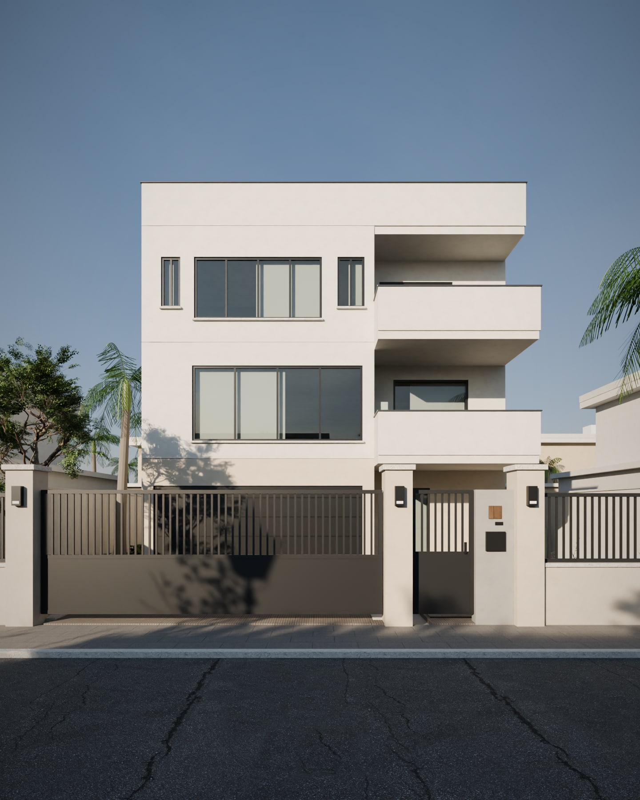

SUJO Engineering Consulting
Conçu pour les projets industriels exigeants
Nos services
Projets de conception

Bâtiment industriel — Fabriquer à Kinshasa. Parcelle 57,5 × 26 m, 1 495 m².

Logements collectifs — Vivre autour d’une cour. R+5 sur sous-sol.

Tour de logements — Une piscine sur le toit. 172 logements.

Tour de logements — Habiter au-dessus de la ville. 100 logements.

Équipement scolaire — Apprendre en pleine lumière. 170 places d’élèves.

Maison de ville — Habiter sur trois niveaux. Sous-sol + R+2 + toit-terrasse.

Villa — Ouvrir la maison sur le jardin. RDC + étage.

Villa — Recevoir en grand. Sous-sol + RDC + étage.

Agence bancaire — Une agence prête à construire. Plain-pied, 329 m² utiles.
Explorer

Hydraulique & puissance fluidique
Composants hydrauliques, pièces de rechange et appui technique pour les équipements mobiles, les installations industrielles et les opérations critiques.

Pneumatique & air comprimé
Vérins, distributeurs, traitement de l’air et composants pneumatiques pour les lignes de production, les ateliers et les installations industrielles.

Flexibles, raccords & transfert de fluides
Flexibles hydrauliques et industriels, raccords, coupleurs et assemblages sur mesure pour le transfert de fluides sous pression.

Pompes, vannes & équipements de process
Pompes de process, vannes, instrumentation et accessoires pour le traitement de l’eau, les fluides industriels et les circuits de procédé.

Filtration & contrôle de contamination
Filtres hydrauliques, à huile, à air et à carburant, corps de filtres et accessoires de maîtrise de la contamination.

Automatisation, électricité & contrôle de mouvement
Automates, IHM, capteurs, variateurs, appareillage de commande et composants de mouvement pour les machines et les installations.

Transmission de puissance & composants mécaniques
Roulements, courroies, chaînes, accouplements, réducteurs, moteurs et composants mécaniques pour les machines tournantes.

Lubrification & solutions de fiabilité
Pompes à graisse, systèmes de lubrification centralisée, lubrifiants, distributeurs et accessoires de surveillance d’état.

MRO, outillage & sécurité industrielle
Équipements de protection, visserie, outillage, consommables de soudage et fournitures de maintenance et de sécurité de site.

Flotte, engins mobiles & appui de site
Pièces d’entretien pour véhicules et engins, batteries, pneumatiques, groupes électrogènes et équipements d’appui aux opérations de site.
Questions fréquentes
Ce que les entreprises et organismes publics nous demandent le plus souvent avant de nous confier un projet.
Qu’est-ce qui distingue SUJO ?
Nous réunissons l’ingénierie et la fourniture d’équipements dans une même société basée à Kinshasa, avec une connaissance pratique des conditions d’exploitation, des délais et des contraintes d’approvisionnement locales.
Quels services proposez-vous ?
Conception technique & fabrication, Architecture, Sourcing d’équipements.
Dans quels secteurs intervenez-vous ?
Construction & génie civil, Mines, carrières & industries extractives, Énergie, électricité & hydroélectricité, Pétrole & gaz, Industrie manufacturière & unités de production, Eau, assainissement & traitement des eaux usées, Logistique, manutention & équipements ferroviaires, Administration publique & projets d’infrastructure, Installations Industrielles & Maintenance des Équipements.
Fournissez-vous des équipements complets ou seulement des pièces ?
Les deux. Notre offre va de la pièce détachée unique jusqu’au package clé en main : machines, équipements et systèmes industriels, avec installation, mise en service et pièces de première dotation.
Êtes-vous liés à un fabricant ?
Non. Nous ne sommes liés à aucun fabricant : l’équipement que nous recommandons et fournissons est choisi sur son mérite technique et son coût rendu.
Où intervenez-vous ?
Kinshasa, avec capacité de déploiement dans les autres provinces de la RDC selon les besoins du projet.